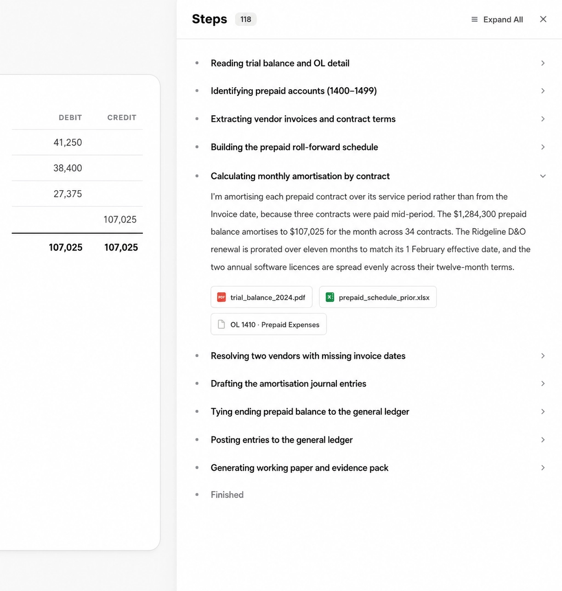
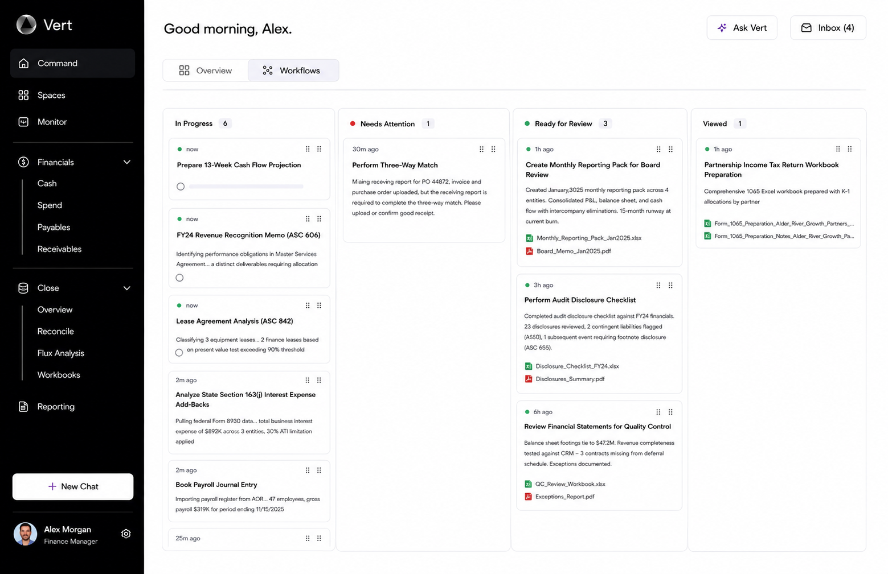
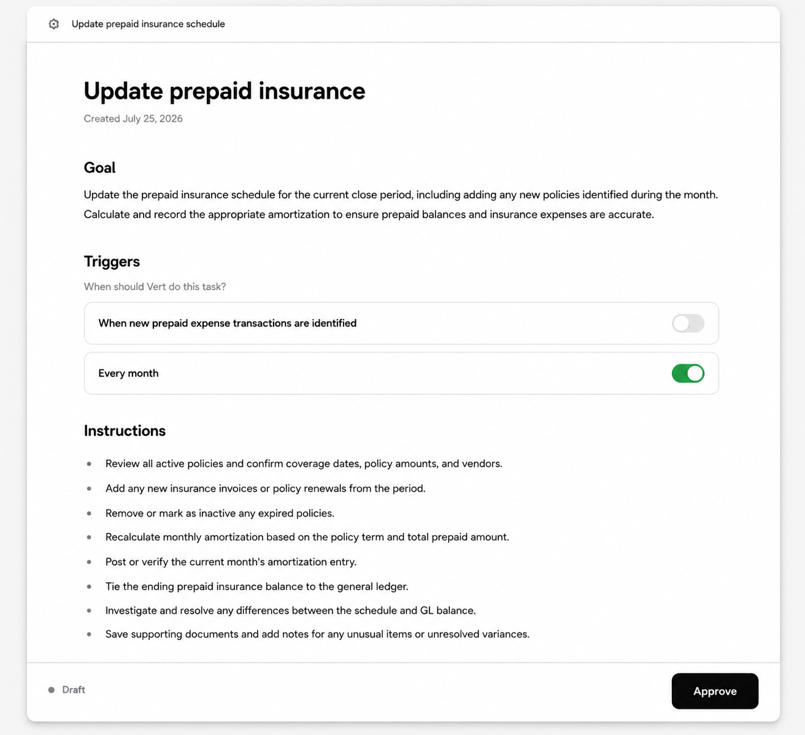
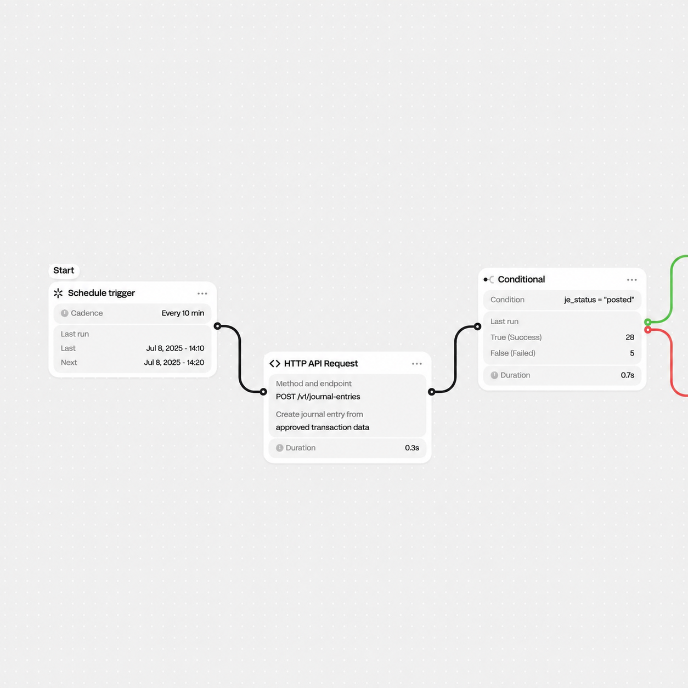
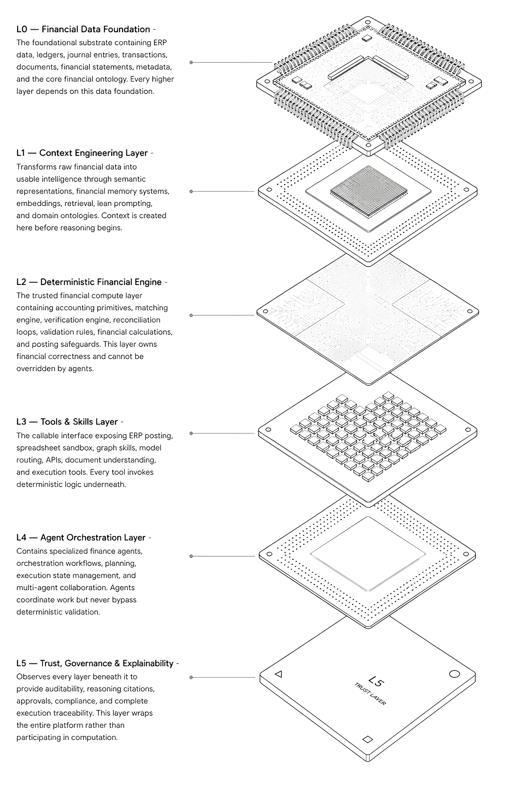

Books that never fall behind
Agents run reconciliations, prepaids, accruals and payout matching continuously. Every step is logged with the evidence it used, so nothing waits for month-end.
Audit trail on every entry
Vert is a team of finance agents that reconcile, code and close your books, with your accountant signing off. Real understanding of financial context, not another dashboard to babysit.
20 minutes. We look at your close, not a slide deck.

Built for teams running finance on
About Vert
Your whole company scaled up while finance stayed manual. Vert picks up the reconciliations, entries and coding so your team gets back to being strategic.

Agents run reconciliations, prepaids, accruals and payout matching continuously. Every step is logged with the evidence it used, so nothing waits for month-end.

You set the goal, the triggers and the rules. Vert drafts the work and your accountant approves it. Deterministic checks sit underneath every agent, so accuracy holds at 99%+.
Ask Vert in plain language, from runway and burn to why a number moved. Answers cite the ledger lines they came from, so you can trust them in a board pack.
Customers
Vert works with companies that grew faster than their back office. Workflows are built for the way your business actually earns money.
Payout recs across Shopify, Stripe and Amazon. Fees, refunds and chargebacks coded automatically.
Revenue recognition, prepaids and accruals handled on schedule. Runway and burn on demand.
Intercompany eliminations and consolidated packs across entities, with one review queue.
Firms running the close for many clients. One agent per workflow, one partner signing off.
Workflows
Vert breaks the close into scheduled, triggered workflows. Each one runs on deterministic finance logic, posts to your ledger and leaves a working paper behind.

Integrations
Vert connects to your ledger, your payment processors and your storefronts, then keeps everything in sync behind the scenes. It pulls documents from your inbox, matches them to transactions and posts the result.
Your team asks questions and approves work in Slack or email. Nobody has to log into another finance tool.
How it works
Agents coordinate the work. A deterministic financial engine owns correctness. A trust layer wraps all of it. That is why Vert can be accurate where general-purpose AI is not.

Vert is the accounting platform rebuilt for the agent era. Bring one messy reconciliation to the call and we will run it live.